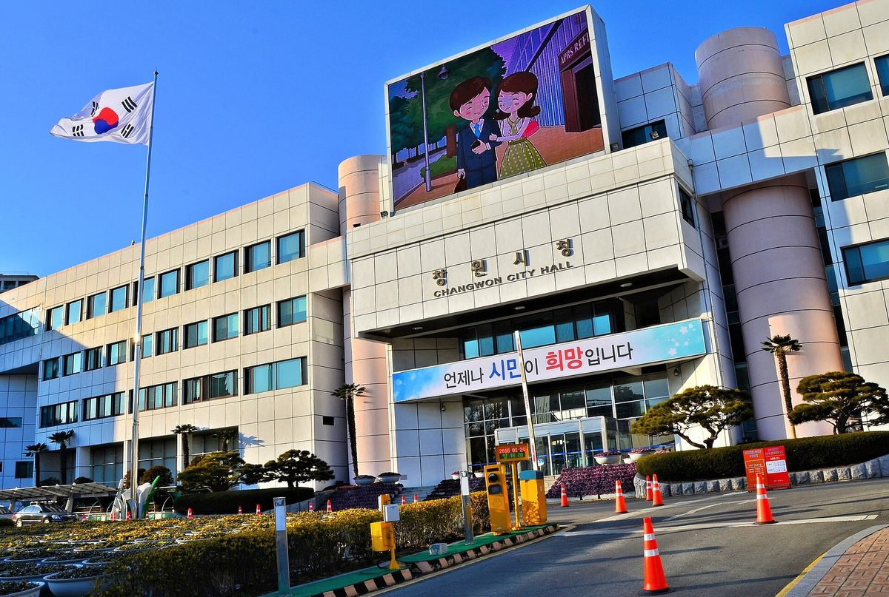

창원시의원, 5분 발언서 창원형 영농·농촌 태양광 제안…기본계획·실증 시범사업과 농민·마을 수익 참여 구조 요구

전홍표 의원 제156회 임시회 본회의서 농지 지키며 농가 새 소득 만들자…작물별 생산량·발전량·농가소득 검증 시범사업 촉구, 제도 시행 맞춰 시가 먼저 준비하라 당부
전홍표 창원시의원(월영·문화·반월중앙·완월동)이 30일 제156회 창원시의회 임시회 제2차 본회의 5분 자유발언에서 농사와 발전을 함께 하는 '창원형 영농·농촌 태양광 에너지 전략'을 세우자고 제안했다. 전 의원은 피지컬 AI와 데이터 산업 같은 미래산업에 안정적인 전력이 필요하다며, 산업단지와 넓은 농촌을 함께 가진 창원이 이를 농가소득과 산업 경쟁력으로 이어 갈 수 있다고 주장했다. 그는 농지 여건을 따진 기본계획을 먼저 세우고, 작물별 생산량과 발전량, 농가소득 효과를 검증하는 시범사업을 벌이며, 농민과 마을공동체가 발전 수익에 참여해 그 돈이 농촌으로 돌아가는 구조를 만들어야 한다고 요구했다. 농사를 계속 지으면서 전기를 만드는 영농형 태양광으로 농지를 지키고 농촌 인구 감소와 고령화, 농가소득 문제에도 대응할 수 있다는 것이 전 의원의 설명이다. 그는 "농지를 지키는 가장 현실적인 방법은 농민이 그 농지에서 계속 살아갈 수 있도록 만드는 것"이라며, 시가 제도 시행에 맞춰 미리 준비하고 실증사업으로 성공 모델을 만들라고 당부했다.
시민에너지 관점
전 의원이 요구한 시범사업의 검증 항목은 작물별 생산량과 발전량, 농가소득인데, 여기에 누가 발전소를 소유하느냐도 함께 들어가야 한다. 영농형 태양광이 농지를 외지 사업자에게 넘기는 통로가 될 수 있다는 우려가 크지만, 그 우려는 패널이 아니라 소유 구조에서 나온다. 같은 논 위 발전소라도 농민과 마을이 지분을 가지면 전기 판매 수입이 마을에 남아 고령 농가의 생활비와 마을 공동 사업으로 돌아간다. 창원시는 기본계획을 세울 때 농민·마을 출자 사업을 시범사업의 첫 조건으로 삼아야 한다.
출처: 경남경제 2026-10-30 김양수 원문 보기
昌原市議、5分間発言で昌原型営農・農村太陽光を提案…基本計画・実証モデル事業と農家・集落の収益参加の仕組みを要求
チョン・ホンピョ議員が第156回臨時会本会議で農地を守りつつ農家の新たな所得をと訴え…作物別の収量・発電量・農家所得を検証するモデル事業を促し、制度施行に合わせ市が先手を打つよう求める
チョン・ホンピョ昌原市議会議員（月影・文化・半月中央・玩月洞）は30日、第156回昌原市議会臨時会第2次本会議の5分間自由発言で、農業と発電を両立させる「昌原型営農・農村太陽光エネルギー戦略」を立てるよう提案した。チョン議員は、フィジカルAIやデータ産業などの未来産業には安定した電力が欠かせないとし、産業団地と広い農村をあわせ持つ昌原なら、これを農家所得と産業競争力につなげられると主張した。そのうえで、農地の条件を踏まえた基本計画をまず策定し、作物別の収量と発電量、農家所得への効果を検証するモデル事業を行い、農家と集落共同体が発電収益に参加してその収益が農村に戻る仕組みをつくるべきだと求めた。農業を続けながら発電する営農型太陽光によって農地を守り、農村の人口減少や高齢化、農家所得の問題にも対応できるというのがチョン議員の説明だ。チョン議員は「農地を守る最も現実的な方法は、農家がその農地で暮らし続けられるようにすることだ」と述べ、市が制度の施行に合わせて前もって準備し、実証事業で成功モデルをつくるよう求めた。
市民エネルギーの視点
チョン議員が求めたモデル事業の検証項目は作物別の収量と発電量、農家所得だが、そこに誰が発電所を所有するのかも加えるべきだ。営農型太陽光が農地を外部の事業者に渡す通り道になりかねないという懸念は根強いが、その懸念はパネルではなく所有の仕組みから生じている。同じ田んぼの上の発電所でも、農家と集落が持ち分を持てば売電収入が集落に残り、高齢農家の生活費や集落の共同事業に回る。昌原市は基本計画を立てる際、農家と集落が出資する事業をモデル事業の第一条件とすべきだ。
出典: 慶南経済 2026-10-30 キム・ヤンス 原文を読む
昌原市议员在5分钟发言中提议昌原型农光互补与农村光伏…要求制定基本规划、开展实证试点并建立农民和村庄分享收益的结构
议员Jeon Hong-pyo在第156次临时会全体会议上呼吁守住农地、为农户创造新收入…敦促开展检验各作物产量、发电量和农户收入的试点项目，要求市政府配合制度实施提前准备
昌原市议员Jeon Hong-pyo（月影、文化、半月中央、玩月洞）30日在第156次昌原市议会临时会第二次全体会议的5分钟自由发言中，提议制定兼顾农业与发电的"昌原型农光互补与农村光伏能源战略"。Jeon议员表示，物理人工智能和数据产业等未来产业需要稳定的电力，而同时拥有产业园区和广阔农村的昌原，可以把这一点转化为农户收入和产业竞争力。他要求先制定考虑农地条件的基本规划，开展检验各作物产量、发电量和农户增收效果的试点项目，并建立让农民和村庄共同体参与发电收益、使收益回流农村的结构。Jeon议员解释说，通过一边种地一边发电的农光互补，可以守住农地，并应对农村人口减少、老龄化和农户收入问题。他说："守住农地最现实的办法，是让农民能够在那片农地上继续生活下去。"并敦促市政府配合制度实施提前准备，通过实证项目打造成功模式。
市民能源视角
Jeon议员要求的试点检验项目是各作物产量、发电量和农户收入，但还应加上一项：电站归谁所有。有人担心农光互补会成为把农地交给外地企业的通道，但这种担忧源自所有权结构，而不是光伏板本身。同样是建在稻田上的电站，如果农民和村庄持有股份，卖电收入就会留在村里，用于高龄农户的生活开支和村庄的共同事业。昌原市在制定基本规划时，应把农民和村庄出资的项目作为试点的首要条件。
来源: 庆南经济 2026-10-30 Kim Yang-su 查看原文
Changwon councillor proposes a Changwon-style agrivoltaics and rural solar strategy in five-minute speech, calling for a master plan, pilot projects and a share of revenue for farmers and villages
Councillor Jeon Hong-pyo tells the 156th extraordinary session that farmland can be kept in use while giving farmers new income, urges pilots that test crop yields, power output and farm income, and asks the city to prepare ahead of the scheme taking effect
Changwon city councillor Jeon Hong-pyo (Wolyeong, Munhwa, Banwoljungang and Wanwol-dong) proposed on the 30th, in a five-minute free speech at the second plenary meeting of the council's 156th extraordinary session, that the city draw up a "Changwon-style agrivoltaics and rural solar energy strategy" combining farming and power generation. Jeon argued that future industries such as physical AI and data need a stable power supply, and that Changwon, with both industrial complexes and wide farming areas, can turn this into farm income and industrial competitiveness. He called for a master plan that takes farmland conditions into account, pilot projects that test crop yields, power output and the effect on farm income crop by crop, and a structure in which farmers and village communities take part in generation revenue so that the money returns to rural areas. Jeon said agrivoltaics, which lets farmers keep growing crops while producing electricity, can protect farmland and help address rural population decline, ageing and farm incomes. "The most realistic way to protect farmland is to make it possible for farmers to keep living on that land," he said, urging the city to prepare ahead of the scheme taking effect and to build a successful model through demonstration projects.
Citizen Energy View
The pilot projects Jeon called for would test crop yields, power output and farm income, but they should also test who owns the power plant. There are strong worries that agrivoltaics could become a route for handing farmland to outside developers, but those worries stem from the ownership structure, not from the panels. Even with the same plant over the same rice paddy, if farmers and villages hold the stakes, electricity income stays in the village and goes to the living costs of elderly farmers and to shared village projects. When Changwon draws up its master plan, it should make farmer- and village-owned projects the first condition for its pilots.
Source: Gyeongnam Economy 2026-10-30 Kim Yang-su Read the original